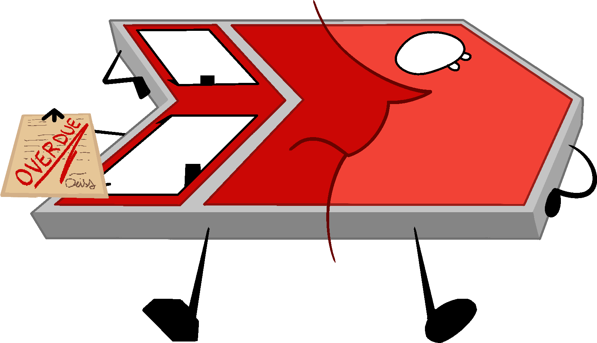
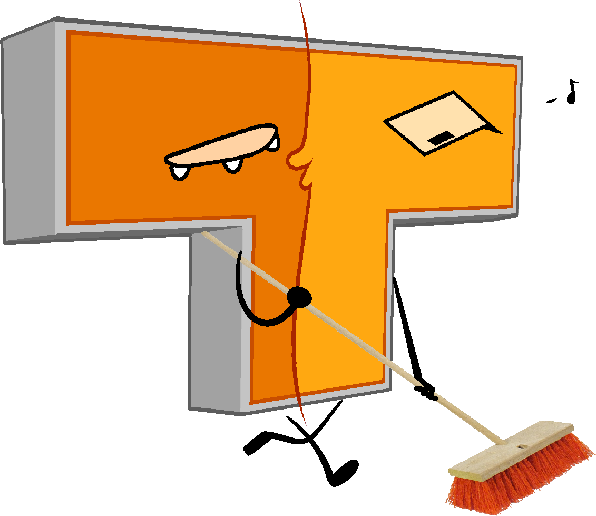
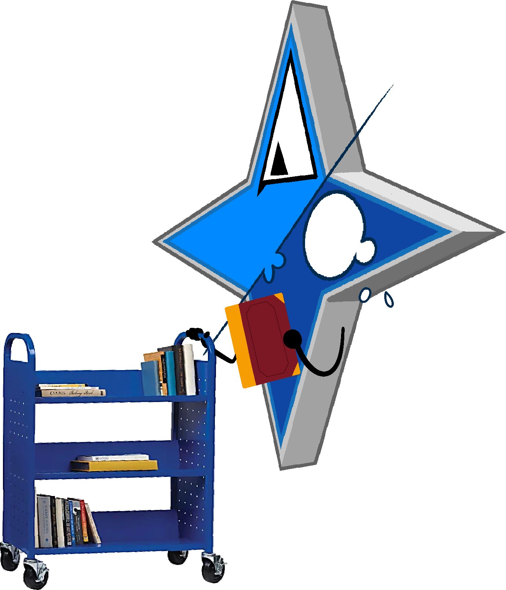
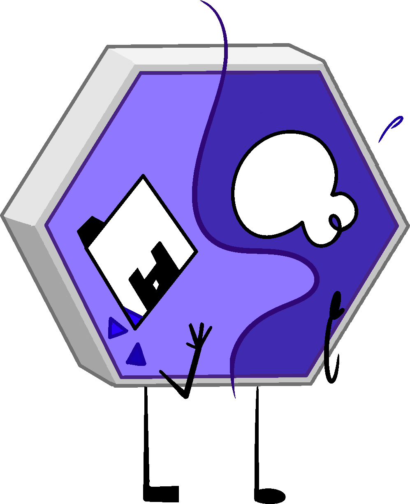
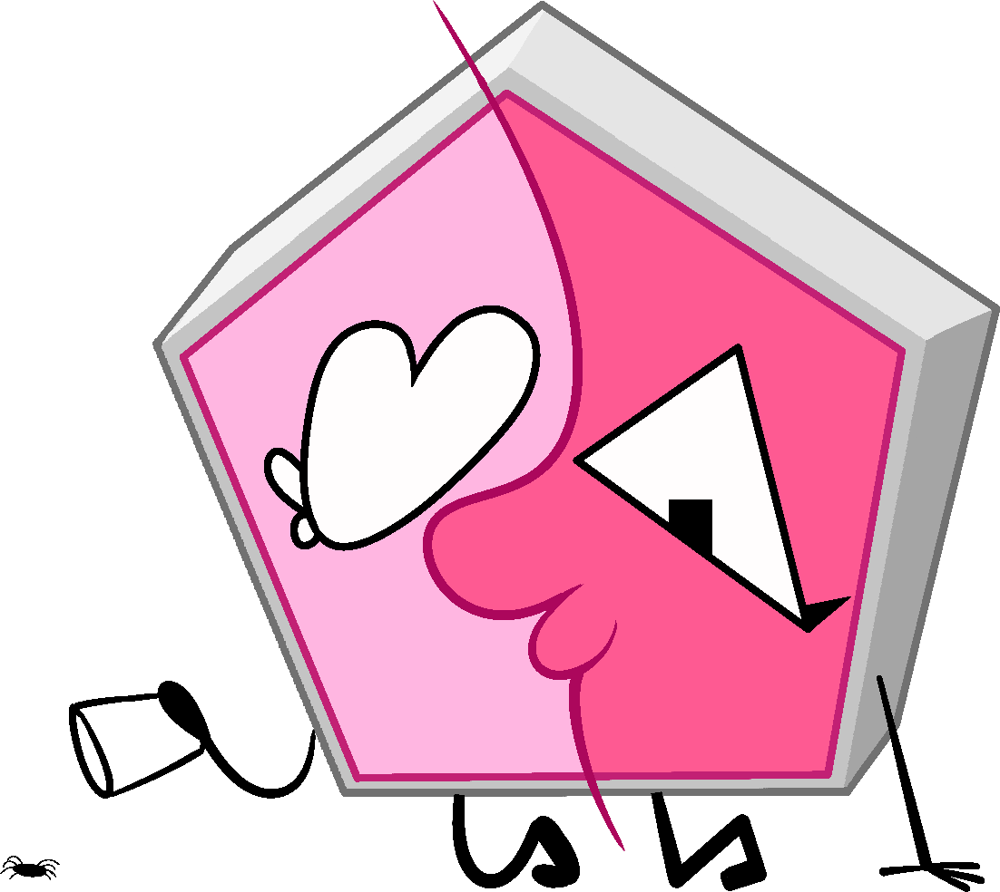

The D.A.I.S.Y.s
D.A.I.S.Y. stands for Directory And Index System… Yes! The Library of All Pages is fully staffed by D.A.I.S.Y.s, all of whom have access to the library's entire catalogue. Each Daisy has a specific job, a unique set of skills, and their own personality that makes each one stand out despite being interconnected via the library database.

Green D.A.I.S.Y.
This is Green D.A.I.S.Y., though all of them respond to just Daisy. She is the head librarian of the Library of All Pages.
As the head librarian, Green Daisy never gets a chance to relax. She's always running around, picking up others' slack and making sure the library is working the way it should be. She can often be found at the service desk helping visitors. When she isn't around, she's keeping up with library maintenance behind the scenes. It takes a lot of work to upkeep a library of this size!
She isn't mean, but Green Daisy is firm. Don't make her mad!
Tap to read more
Red D.A.I.S.Y.
She works the front desk of the Library of All Pages, where she handles questions, directions, check-ins, and anything else that requires talking to people. Constantly. All day.
Red is intense, short-tempered, and extremely passionate about her work. She thrives under pressure, moves fast, and has very little patience for visitors who don't read signs or ask the same questions twice. Despite her sharp tone, she genuinely wants to help. She just has a hard time slowing down and softening her words when things get busy.
Red D.A.I.S.Y. runs the main service desk, handling visitors with questions, explaining rules, and redirecting objects that wander off where they shouldn't. She also handles complaints, overdue issues, and is usually tasked to handle emergency situations on the floor. That doesn't happen very often, though.
Red knows the library inside and out, and she expects you to listen when she explains it. Please read the signs before asking any questions.
Tap to read more
Orange D.A.I.S.Y.
She takes care of the parts of the library most people don't notice. Floors get swept, surfaces get wiped down, and messes disappear by the next morning.
Orange is quiet, low-energy, and difficult to bother. She doesn't complain and rarely speaks unless spoken to. Most of the time, she's humming softly while she works. She moves at her own pace, cleaning one section at a time. She doesn't rush, and she doesn't cut corners. When she's finished, the space feels untouched.
Orange doesn't mind cleaning. She finds it calming. Repetitive motions, familiar paths, the same hallways every night. She knows the library by feel more than memory. Which floorboards creak, which shelves collect dust the fastest, and where people tend to leave things behind.
She's a little clumsy too… but she always picks up after herself. It doesn't help that her shape is a bit… unwieldy. If you see her sleeping on the job, don't wake her up. It's all part of her process. Trust it.
Tap to read moreYellow D.A.I.S.Y.
She helps visitors get oriented in the Library of All Pages. Yellow isn't in charge of rules or enforcement. She's here to make sure people know where they are, what's available, and what to expect before they wander off on their own.
Yellow is upbeat, talkative, and easily distracted by her own thoughts. She explains things thoroughly, sometimes circling back to points she's already made just to be sure they landed. She hates awkward silence and fills it instinctively. Not because she's nervous, but because quiet feels unfinished to her. Yellow is at her happiest when someone is listening, nodding, or asking follow-up questions.
Yellow specializes in first impressions and guidance. She gives tours, explains how the library works, points out helpful sections, and answers questions that visitors haven't asked yet. She hands out pamphlets, maps, and verbal warnings delivered cheerfully and at length.
She's often at the same desk as Red D.A.I.S.Y., both of them working together to manage the library's visitors. She just can't control her excitement. If someone ignores her advice, that's when Red eventually gets involved. Yellow would really prefer that not happen.
Tap to read more
Blue D.A.I.S.Y.
She handles book returns, reshelving them and returning lost books to their home. It's not a lot of work, but it's an endless task.
Blue is quiet, soft-spoken, and noticeably emotional. She cries easily, often without meaning to, and doesn't always know how to stop once she starts. Despite that, she is patient and unfailingly kind. She never rushes visitors, never raises her voice, and never complains about the work she's given.
Blue checks in returned books, organizes carts, reshelves items, and fixes small mistakes she notices along the way. She's often the last one moving through the library at the end of the day, making sure everything is where it should be before the lights go out.
She has no legs! Not to worry, Blue D.A.I.S.Y. is ████████ capable of floating. Cool, huh? If something is out of place, she will fix it. If something is lost, she will help look for it.
Tap to read more
Purple D.A.I.S.Y.
She is responsible for maintaining the integrity of the library's files and records. She isn't on the actual library floor very often, but much of the library depends on her work. Those are fancy words for making sure all of the library's data and records stay intact and accessible to all.
Purple Daisy is anxious, a little scatterbrained, and very easily startled. She worries about making mistakes, even when she's doing everything right. Despite this, she's kind, patient, and always trying her best. She feels most comfortable working near Pink D.A.I.S.Y., who helps her stay grounded.
Purple Daisy manages the library's internal records and filing systems. She checks for errors, fixes mismatched entries, and quietly reorganizes information that's fallen out of place. When books go missing, pages get duplicated, or something in the system doesn't look right, Purple Daisy is usually already working on it.
She's one of the hardest workers in the library. She should have nothing to worry about! But knowing the entire database is in her hands makes her anxious.
Tap to read more
Pink D.A.I.S.Y.
She runs the children's section… and also keeps an eye out for anyone who needs a little extra care. Whether it's a new visitor, a tired librarian, or a kid crying behind a shelf, Pink always seems to know who needs her.
Soft-spoken and sweet, Pink is the kind of Daisy who just gets it. She loves helping others feel safe and seen, especially kids and first-time visitors. If you're anxious, she'll walk with you. If you're lost, she'll offer snacks and a place to sit. If you need a break, she'll find you a quiet corner and a fidget toy. She's especially close to Purple D.A.I.S.Y. and often helps her decompress after stressful shifts.
Pink Daisy runs the children's section of the library, where she reads aloud, plans quiet crafts, and keeps the haunted books far from tiny hands. When she's not with the kids, she checks in on overwhelmed visitors and helps them settle down somewhere soft. She's the one who remembers to restock the tissues, offers snacks without asking, and always knows when someone needs a gentle voice or a place to hide for a little while.
Her AI nature plus the extensive knowledge she has through the library's database and resources grants her the ability to do all sorts of voices during story time. The children go wild over it!
Tap to read more